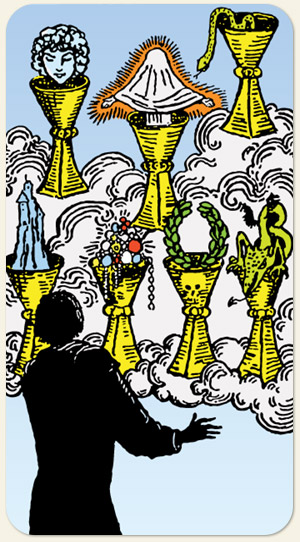

7 de Copas
Acreditar sem ver, confiabilidade, a busca pela realização por meio de coisas mais elevadas, buscar preencher os vazios existenciais, ver além do concreto, buscar o espiritual, sexto sentido
Positivo: A visão dos milagres, ver o que não é físico, percepção espiritual, visões proféticas, ver com os olhos da alma, amor incondicional, amor vindo dos seres espirituais, sonhar com um mundo melhor.
Negativo: Pessimismo na autoimagem, andar no mundo da lua, fantasias prejudiciais, atrair energias espirituais negativas, viagens perturbadoras que podem ou não serem induzidas por meio de substâncias, medos, pavores, mania de perseguição, viajar na maionese.
Símbolos:
Cores: Cor, Cor, Cor.